4.2.1.5 Administrador de Seguridad
1. Perfiles de Seguridad
Dentro de la sección de 'Administrador de seguridad', se tienen los 'Perfiles de seguridad'.
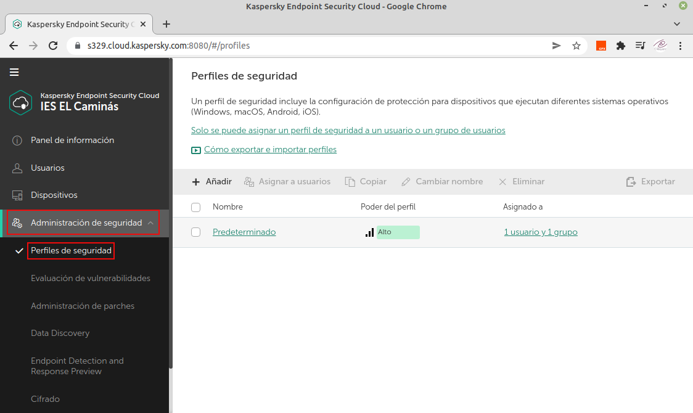
Figura 1. Perfiles de seguridad.
Como se comento en apartados anteriores, por defecto, se tienen un perfil de seguridad “predeterminado” y este perfil no se puede “Eliminar” o cambiarle el nombre. No está de más tener una copia de este perfil “predeterminado” por si en algún momento se quiere cambiar esta configuración, aunque sería más recomendable hacer una copia para modificar la copia.
2. Resumen de las opciones de configuración de los perfiles de seguridad para Windows
Para acceder a la configuración de seguridad, hay que hacer clic en Perfiles de seguridad -> Predeterminado -> Configuración de seguridad.
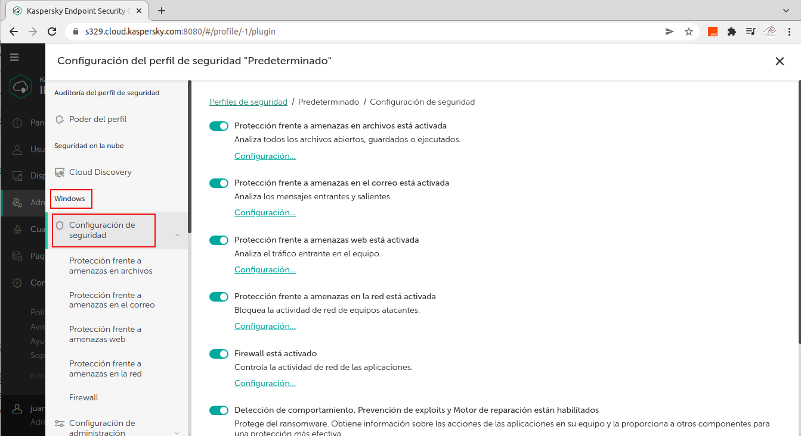
Figura 2. Configuración de seguridad para Windows.
A continuación, se comenta cada sección:
- Protección frente a amenazas en archivos está activada. Analiza todos los archivos abiertos, guardados o ejecutados.
- Protección frente a amenazas en el correo está activada. Analiza los mensajes entrantes y salientes.
- Protección frente a amenazas web está activada. Analiza el tráfico entrante en el equipo.
- Protección frente a amenazas en la red está activada. Bloquea la actividad de red de equipos atacantes.
- Firewall está activado. Controla la actividad de red de las aplicaciones.
- Detección de comportamiento, Prevención de exploits y Motor de reparación están activados. Protege del ransomware. Recopila información sobre las acciones de las aplicaciones en su equipo y proporciona esta información a otros componentes para una protección más efectiva.
Para acceder a la configuración de administración, hay que hacer clic en Perfiles de seguridad -> Predeterminado -> Configuración de administración.
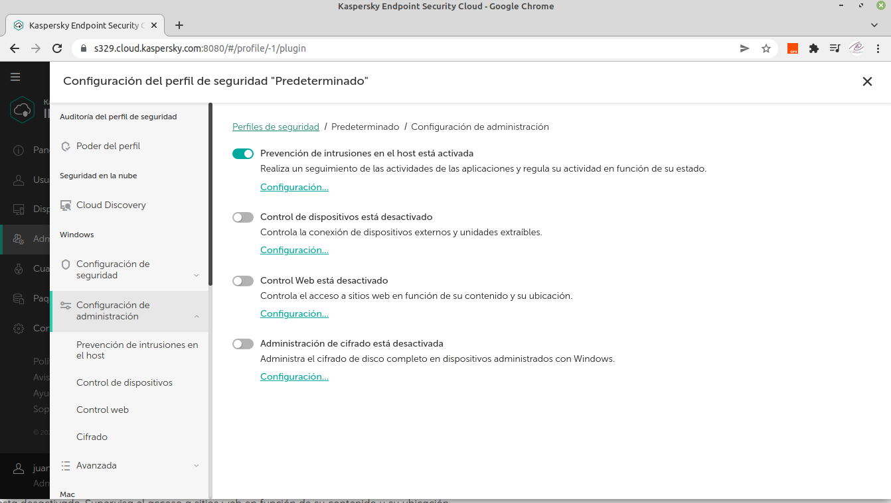
Figura 3. Configuración de administración para Windows.
A continuación, se comenta cada sección:
- Cloud Discovery está activado. Supervisa los servicios de nube que se utilizan en los dispositivos con Windows y bloquea el acceso a los servicios de nueve que usted considere no deseados.
- Prevención de intrusiones en el host está activada. Realiza un seguimiento de las actividades de las aplicaciones y regula su actividad en función de su estado.
- Control de dispositivos está activado. Controla la conexión de dispositivos externos y unidades extraíbles.
- Control web esta desactivado. Supervisa el acceso a sitios web en función de su contenido y su ubicación.
- Administración de cifrado está desactivada. Administra el cifrado de disco completo en dispositivos administrados con Windows.
Para acceder a la configuración avanzada, hay que hacer clic en Perfiles de seguridad -> Predeterminado -> Avanzada.
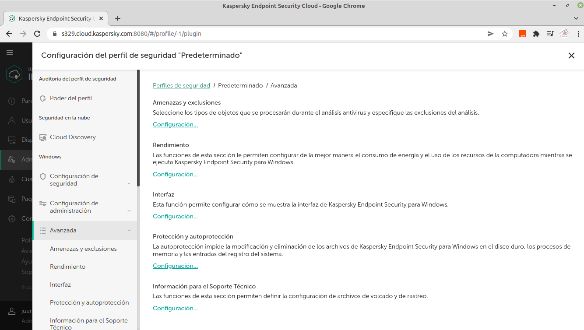
Figura 4. Configuración avanzada para Windows.
A continuación, se comenta cada sección:
- Amenazas y exclusiones. Seleccione los tipos de objetos que se procesarán durante el análisis antivirus y especifique las exclusiones del análisis.
- Rendimiento. Las funciones de esta sección le permiten configurar de la mejor manera el consumo de energía y el uso de los recursos de la computadora mientras se ejecuta Kaspersky Endpoint Security para Windows.
- Interfaz. Esta función permite configurar cómo se muestra la interfaz de Kaspersky Endpoint Security para Windows.
- Protección y autoprotección. La autoprotección impide la modificación y eliminación de los archivos de Kaspersky Endpoint Security para Windows en el disco duro, los procesos de memoria y las entradas del registro del sistema.
- Información para el Soporte Técnico. Las funciones de esta sección permiten configurar los archivos de volcado y de rastreo.
3. Resumen de las opciones de configuración de los perfiles de seguridad para Mac
Para acceder a la configuración de seguridad, hay que hacer clic en Perfiles de seguridad -> Predeterminado -> Configuración de seguridad.
Figura 5. Configuración de seguridad para Mac.
A continuación, se comenta cada sección:
- Protección frente a amenazas en archivos está activada. Analiza todos los archivos abiertos, guardados o ejecutados.
- Protección frente a amenazas web está activada. Analiza el tráfico entrante en el equipo.
- Protección frente a amenazas en la red está activada. Bloquea la actividad de red de equipos atacantes
Para acceder a la configuración de administración, hay que hacer clic en Perfiles de seguridad -> Predeterminado -> Configuración de administración.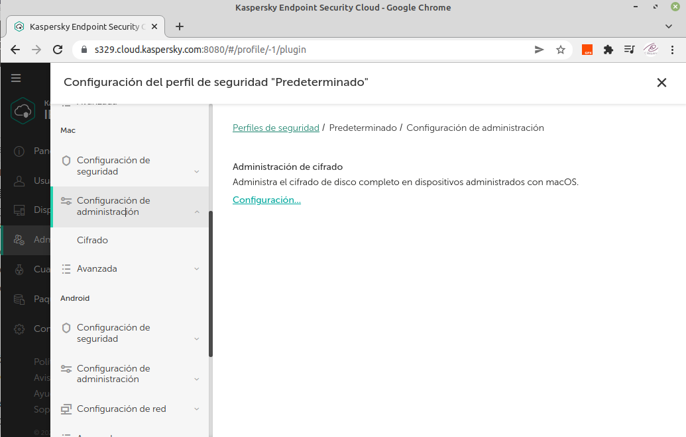
Figura 5. Configuración de administración para Mac.
A continuación, se comenta la sección:
- Administración de cifrado. Administra el cifrado de disco completo en dispositivos administrados con macOS.
Para acceder a la configuración Avanzada, hay que hacer clic en Perfiles de seguridad -> Predeterminado -> Avanzada.
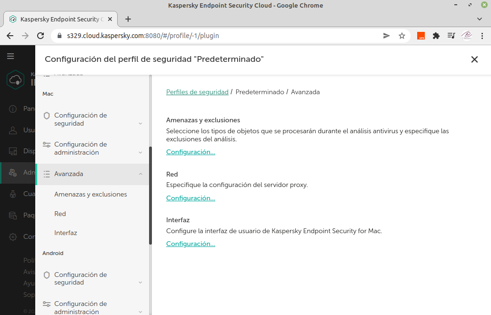
Figura 6. Configuración avanzada para Mac.
A continuación, se comentan la secciones:
- Amenazas y exclusiones. Seleccione los tipos de objetos que se procesarán durante el análisis antivirus y especifique las exclusiones del análisis.
- Red. Especifique la configuración del servidor proxy.
- Interfaz. Esta función permite configurar cómo se muestra la interfaz de Kaspersky Endpoint Security para Mac.
4. Resumen de las opciones de configuración de los perfiles de seguridad para Android
Para acceder a la configuración de seguridad, hay que hacer clic en Perfiles de seguridad -> Predeterminado -> Configuración de seguridad.
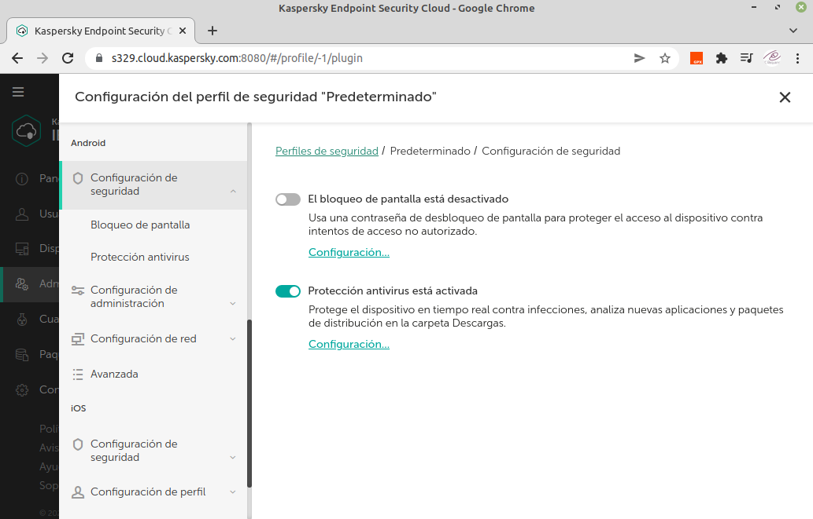
Figura 6. Configuración de seguridad para Android.
A continuación, se comentan la secciones:
- El bloqueo de pantalla está desactivado. Usa una contraseña de desbloqueo de pantalla para proteger el acceso al dispositivo contra intentos de acceso no autorizado.
- Protección antivirus está activada. Protege el dispositivo en tiempo real contra infecciones, analiza nuevas aplicaciones y paquetes de distribución en la carpeta Descargas.
Para acceder a la configuración de administración, hay que hacer clic en Perfiles de seguridad -> Predeterminado -> Configuración de administración.
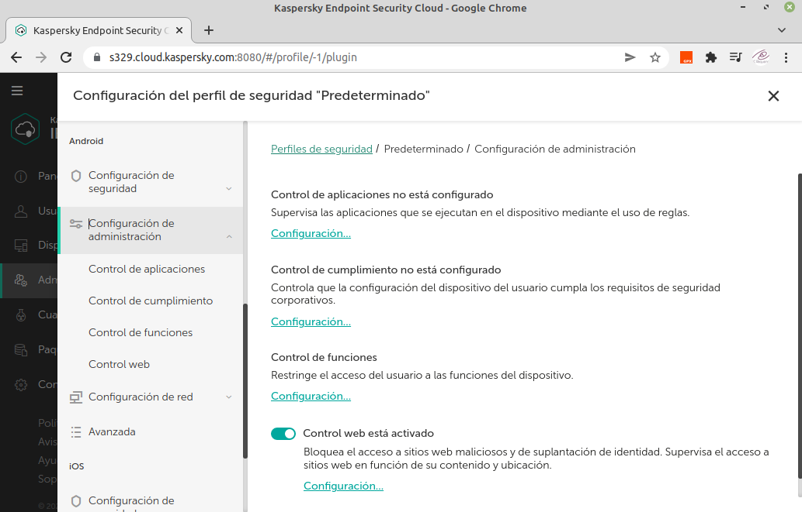
Figura 7. Configuración de administración para Android.
A continuación, se comentan la secciones:
- Control de aplicaciones no está configurado.
- Control de cumplimento no está configurado.
- Control de funciones.
- Control web esta activado.
Para acceder a la configuración de red, hay que hacer clic en Perfiles de seguridad -> Predeterminado -> Configuración de red.
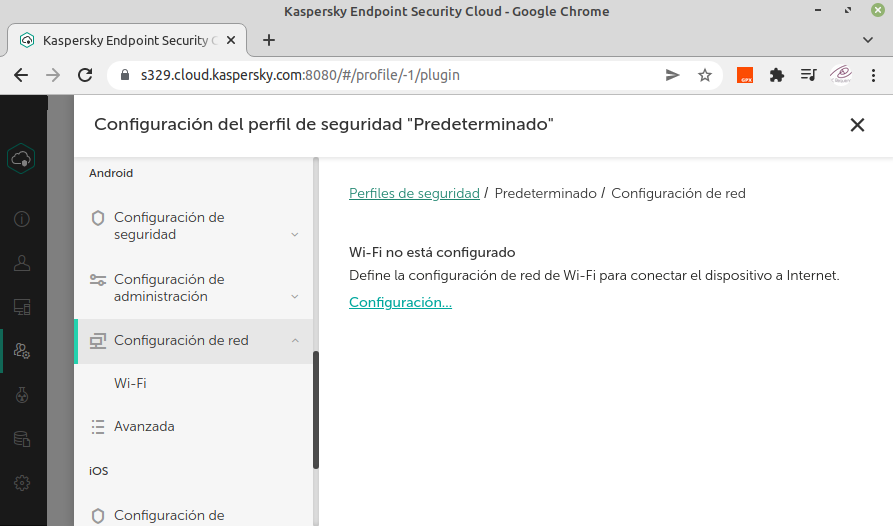
Figura 8. Configuración de red para Android.
A continuación, se comentan la secciones:
- Wi-Fi no está configurado. Define la configuración de red de Wi-Fi para conectar el dispositivo a Internet.
Para acceder a la configuración avanzada, hay que hacer clic en Perfiles de seguridad -> Predeterminado -> Avanzada.
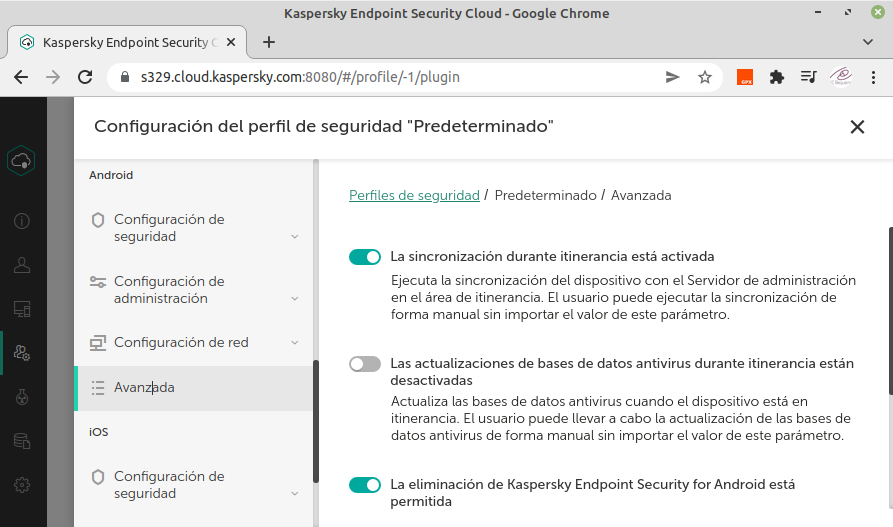
Figura 8. Configuración avanzada para Android.
A continuación, se comentan la secciones:
- La sincronización durante itinerancia está activada. Ejecuta la sincronización del dispositivo con el Servidor de administración en el área de itinerancia. El usuario puede ejecutar la sincronización de forma manual sin importar el valor de este parámetro.
- Las actualizaciones de bases de datos antivirus durante itinerancia están desactivadas. Actualiza las bases de datos antivirus cuando el dispositivo está en itinerancia. El usuario puede llevar a cabo la actualización de las bases de datos antivirus de forma manual sin importar el valor de este parámetro.
- La eliminación de Kaspersky Endpoint Security for Android está permitida.
4. Resumen de las opciones de configuración de los perfiles de seguridad para iOS
Para acceder a la configuración de seguridad, hay que hacer clic en Perfiles de seguridad -> Predeterminado -> Configuración de seguridad.
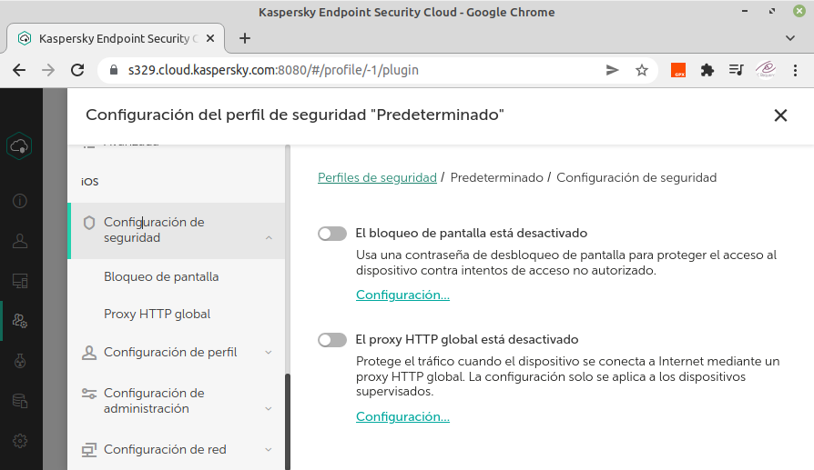
Figura 9. Configuración de seguridad para iOS.
A continuación, se comentan la secciones:
- El bloqueo de pantalla está desactivado. Usa una contraseña de desbloqueo de pantalla para proteger el acceso al dispositivo contra intentos de acceso no autorizado.
- El proxy HTTP global está desactivado. Protege el tráfico cuando el dispositivo se conecta a Internet mediante un proxy HTTP global. La configuración solo se aplica a los dispositivos supervisados.
Para acceder a la configuración de perfil, hay que hacer clic en Perfiles de seguridad -> Predeterminado -> Configuración de perfil.
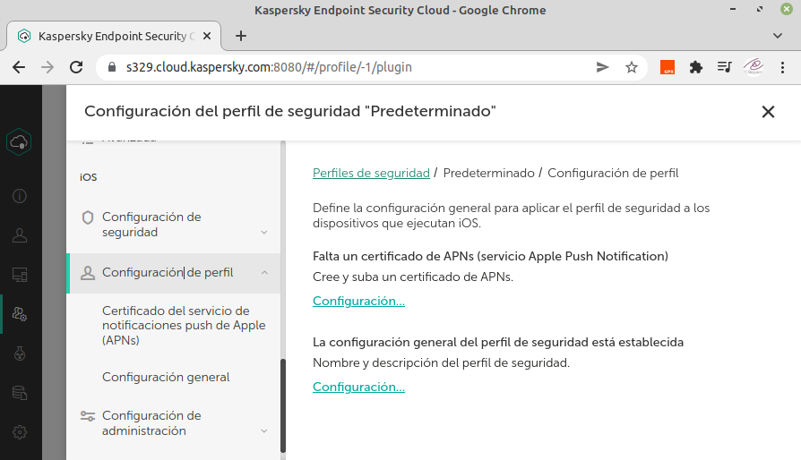
Figura 10. Configuración de perfil para iOS.
En este perfil, se define la configuración general para aplicar el perfil de seguridad a los dispositivos que ejecutan iOS. A continuación, se comentan la secciones:
- Falta un certificado de APNs (servicio Apple Push Notification). Si se crea uno, pondrá, se ha recibido un certificado de APNs (servicio Apple Push Notification). El certificado caduca en una fecha, ejemplo: 02/04/2022 17:48.
- La configuración general del perfil de seguridad está establecida. Nombre y descripción del perfil de seguridad.
Para acceder a la configuración de administración, hay que hacer clic en Perfiles de seguridad -> Predeterminado -> Configuración de administración.
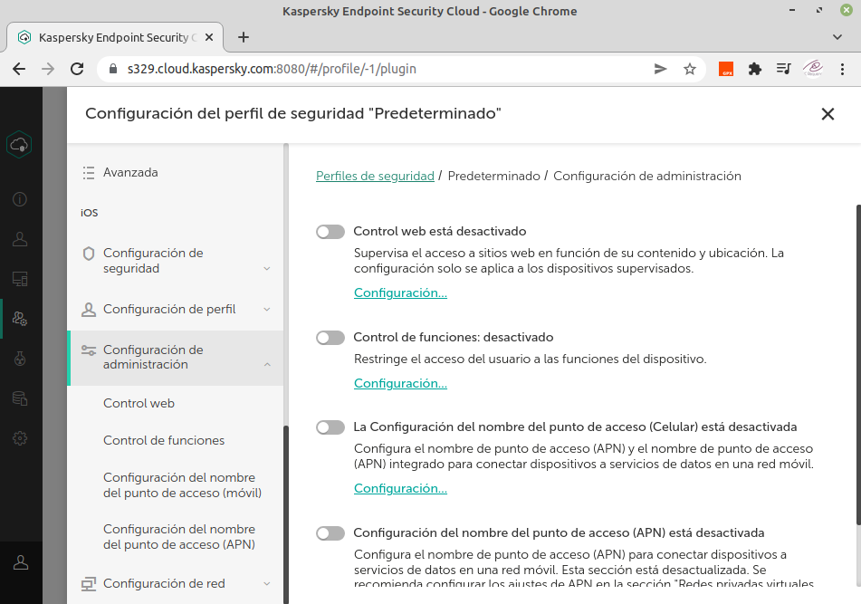
Figura 11. Configuración de administración para iOS.
A continuación, se comentan la secciones:
- Control web esta desactivado. Supervisa el acceso a sitios web en función de su contenido y ubicación. La configuración solo se aplica a los dispositivos supervisados.
- Control de funciones esta desactivado. Restringe el acceso del usuario a las funciones del dispositivo.
- La configuración del nombre del punto de acceso (Celular) está desactivada. Configura el nombre de punto de acceso (APN) y el nombre de punto de acceso (APN) integrado para conectar dispositivos a servicios de datos en una red móvil.
- Configuración del nombre del punto de acceso (APN) está desactivada. Configura el nombre de punto de acceso (APN) para conectar dispositivos a servicios de datos en una red móvil. Esta sección está desactualizada. Se recomienda configurar los ajustes de APN en la sección "Redes privadas virtuales (Celulares)".
Para acceder a la configuración de red, hay que hacer clic en Perfiles de seguridad -> Predeterminado -> Configuración de red.
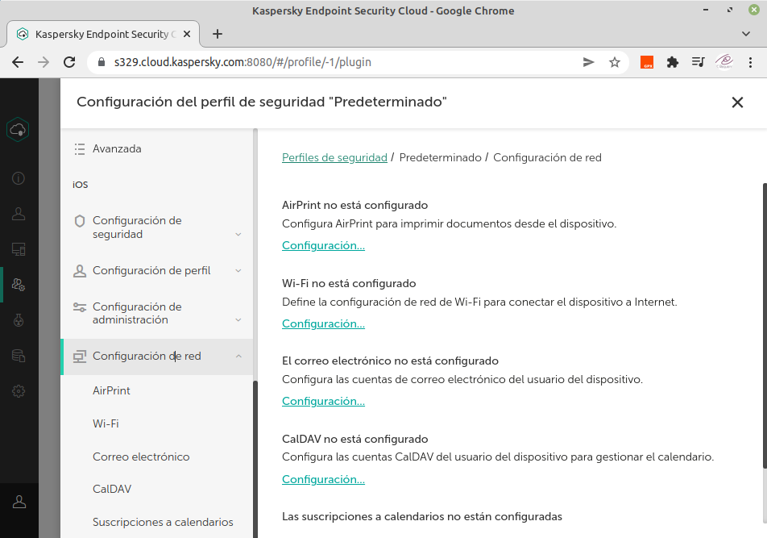
Figura 12. Configuración de red para iOS.
A continuación, se comentan la secciones:
- AirPrint no está configurado. Configura AirPrint para imprimir documentos desde el dispositivo.
- Wi-Fi no está configurado. Define la configuración de red de Wi-Fi para conectar el dispositivo a Internet.
- Correo electrónico está desactivado. Configura las cuentas de correo electrónico del usuario del dispositivo.
- CalDAV está desactivado. Configura las cuentas CalDAV del usuario del dispositivo para gestionar el calendario.
- Suscripciones a calendarios están desactivadas. Configura la suscripción a calendarios de terceros para añadir eventos al dispositivo.
Obra publicada con Licencia Creative Commons Reconocimiento No comercial Compartir igual 4.0